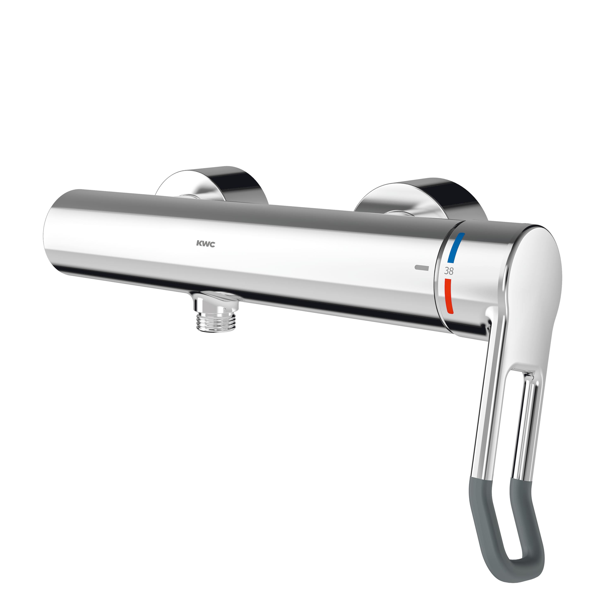

KWC Aquarotter GmbH
F4LT-Med Thermostat-Einhebel-Wandbatterie mit Handbrauseanschluss
F4LT2003 - 2030066757
F4LT-Med Thermostat-Einhebelmischer als Wandbatterie DN 15 zur Aufputzmontage, für Duschanlagen im Gesundheitswesen und Pflegebereich, Hebellänge 118 mm. Thermostatisch gesteuerte Mischkartusche mit Dehnstoffelement und aktivem Verbrühungsschutz, eigensicher gegen Rückfließen sowie einstellbarem, verdrehsicherem Temperaturanschlag und Keramikscheibentechnik. Eingangsseitig ohne Rückflussverhinderer für optimierte Trinkwasserhygiene.
Kontakt
Parkstraße 1-5 | 14974 Ludwigsfelde | Deutschland
Telefon +49 3378 818455 | kwc-info.de@kwc.com